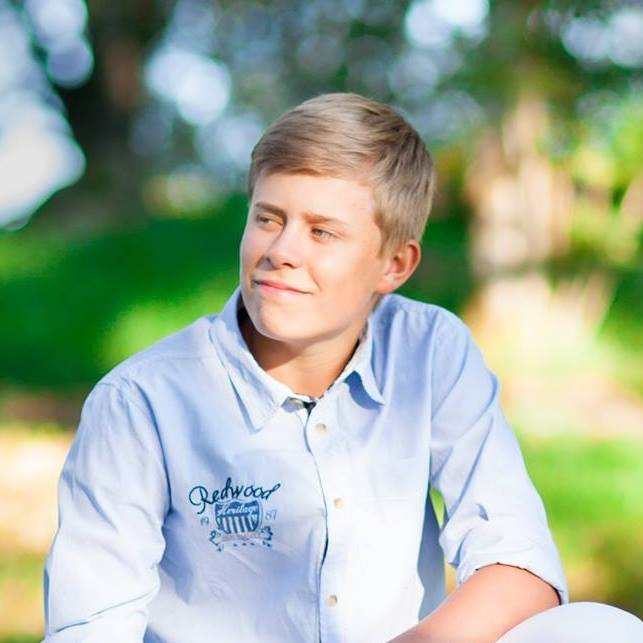

Jacka med flexibel skärm
Målgrupp: Polis, väktare och Fjällräddning
Designer/Konstruktör: Simon Utter
En jacka med flexibel skärm på vänstra ärmen som är kopplad till en kamera som tittar bak och en fram. Kamerorna ska vara FLIR, detta betyder att man kan se i mörker då kameran ser infrarött ljus/värme. Jackan är även utrustad med LED-lister som ersätter reflexer, internetrouter och ett större batteri. Allt detta kan styras med hjälp av knappar bredvid skärmen.
Arbetsbeskrivning
Personlig Information
Jag heter Simon Butter är 17 år och går på Thoren Innovation School i Helsingborg, jag går
teknikprogrammet och inriktning design och produktutveckling. Jag bor precis utanför
Helsingborg i Rydebäck.
Jag driver ett UF-företag (Click and Drive UF), där vi tagit fram en övningskörningsskylt som
är säkrare och bättre än de befintliga alternativen. Jag jobbar även deltid hos min pappa på
Hucon, Hucon AB och Magnacon AB. Detta jobb betyder ofta att jag håller på med ritningar,
kartor, fakturor, design och liknande. På fritiden spenderar jag även tid på att spela E-sport
men även redigera och ta bilder.
Saker jag tidigare designat: Kontor, delar av byggnader, tryck på tröjor, utseende på
företagsbil, golfhål, mm.
Styrkor: Jag är mycket social och gillar att ta en ledarroll i grupper/projekt. Jag är även
mycket envis och så fort jag bestämt mig att jag ska något så finns det inget som kan stoppa
mig.
Så som jag ser det är det viktigaste i världen kunskap, kunskap ger makt och pengar om den
används rätt. Därför anser jag att alla chanser att lära mig någonting är en chans att ta.
I framtiden planerar jag att bli arkitekt. Det finns även möjlighet att ta över min pappas
företag som idag jobbar inom flera områden som: projektledning, fastigheter och många fler.
Det jag helst hade velat göra är att designa bilar, men inte bara designa bilar utan se till att
de bilar som jag har ansvar för är bättre för miljön, användare och framtiden än de bilar vi
har idag.